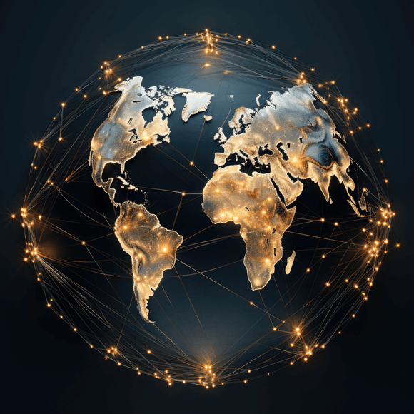
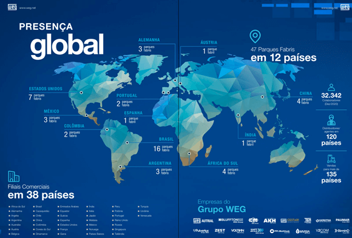
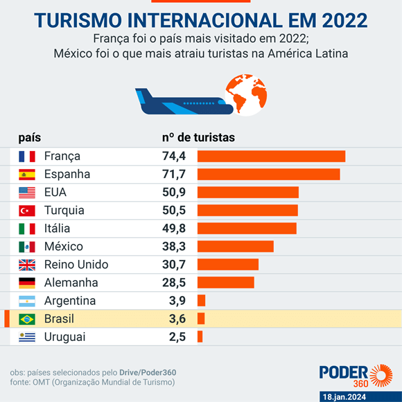
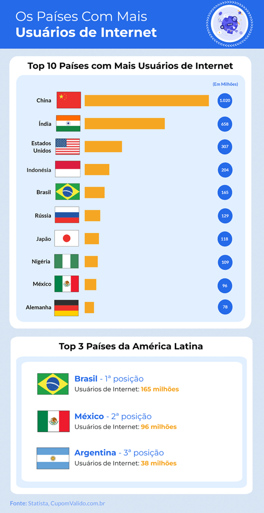
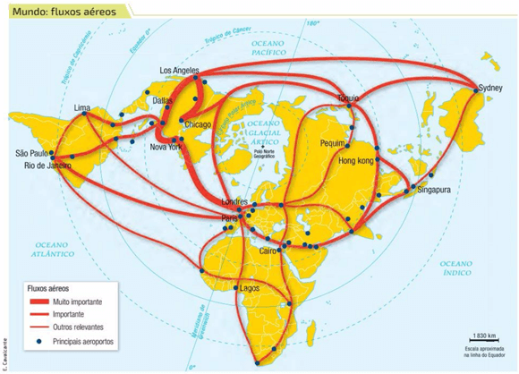
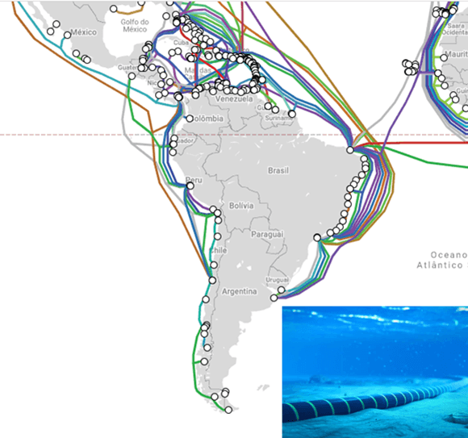
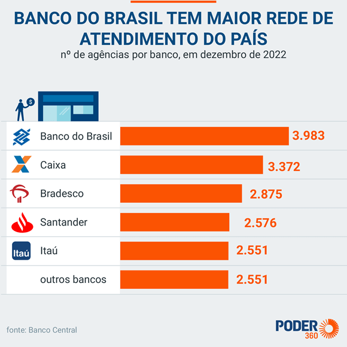
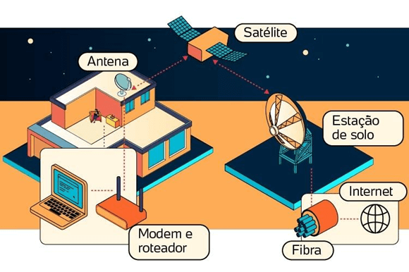
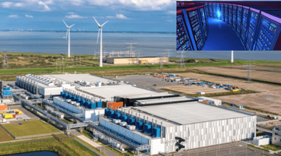

Objetivo: Entender as relações entre os principais fluxos na era da globalização e seu papel
na dinâmica do espaço geográfico atual. Identificar diferentes tipos de redes pelo mundo.
Digite seu nome
Introdução
Na aula passada, vimos o que é urbanização, suas causas e consequências
para o espaço geográfico.
Nesta aula, exploraremos outro elemento do espaço: as redes geográficas e seu papel na dinâmica do mundo
atual.
Discutiremos sobre os diferentes tipos de redes, os fluxos internacionais, o papel das empresas
multinacionais, as tecnologias da informação e a globalização e faremos uma atividade prática ao final da
aula.
Questões para serem respondidas no caderno sobre o tema da aula de hoje:
O que são redes geográficas e qual é a sua importância na dinâmica do espaço geográfico atual?
Explique o papel das redes técnicas na globalização e dê exemplos de infraestruturas que fazem parte
dessas redes.
Quais são os principais tipos de redes na atualidade e qual é a função de cada uma delas? Dê
exemplos de cada tipo de rede.
Quais são os desafios enfrentados pelo Sul-Global devido à falta de infraestrutura de rede? Como
essa falta de infraestrutura afeta a soberania dos Estados nacionais?
Por que a distribuição desigual de datacenters pelo mundo contribui para os desafios enfrentados
pelo Sul-Global? Explique.
Introdução
Revisão: Urbanização e suas implicações para o espaço geográfico.
Tema da Aula: Redes geográficas e sua importância na dinâmica global.
Redes Geográficas
Definição: Conexões que permitem a circulação de pessoas, informações, mercadorias, e dinheiro.
Exemplos:
Redes de transporte (estradas, ferrovias, portos, aeroportos).
Conexões virtuais (internet, redes de telefonia).
Cadeias de produção globais (ex: empresa WEG).
Redes Técnicas
Definição: Infraestruturas que possibilitam a movimentação de informações e recursos.
Exemplos:
Internet e sua importância global.
Cabos submarinos de fibra óptica.
Sistemas de logística e cadeias de suprimentos.
Redes Financeiras
Definição: Circulação de capital em escala global.
Exemplo:
Rede de agências bancárias do Banco do Brasil.
Redes Informacionais
Definição: Tecnologias da informação que permitem acesso instantâneo à informação.
Exemplos:
Internet.
Redes de comunicação via satélite e fibra óptica.
Redes de Empresas ou Empresas em Rede
Definição: Estruturas que conectam unidades de produção e parceiros comerciais globalmente.
Exemplo:
Amazon e sua rede de centros de distribuição no Brasil.
Desafios do Sul-Global
Falta de Infraestrutura de Rede: Acesso limitado à internet e sistemas de transporte de dados deficientes.
Impacto na Soberania: Dificuldades em exercer controle sobre a circulação de informações e proteger dados.
Distribuição Desigual de Datacenters: Concentração em países desenvolvidos, criando disparidades tecnológicas.
Definição de Redes Geográficas:

Fonte: freepik.com
As redes geográficas são como teias que conectam diferentes lugares do mundo, permitindo a circulação de
pessoas, informações, mercadorias e dinheiro. Imagine-as como grandes linhas invisíveis que unem cidades,
países e continentes. Um exemplo claro de rede geográfica são as redes de transporte, como estradas,
ferrovias, portos e aeroportos, que facilitam a movimentação de pessoas e produtos de um lugar para outro.
Além disso, as redes geográficas também englobam as conexões virtuais, como a internet e as redes de
telefonia, que nos permitem estar conectados instantaneamente com pessoas do outro lado do mundo. Por
exemplo, hoje em dia é possível conversar com alguém que esteja do outro lado do planeta em tempo real
através de aplicativos de mensagens ou redes sociais.
Outro exemplo importante de rede geográfica são as cadeias de produção globais, onde componentes de um
produto são fabricados em diferentes países e depois montados em outro lugar.

Fonte: weg
Por exemplo, a empresa brasileira WEG, especializada em tecnologia elétrica e automação, faz parte de
diversas cadeias de produção globais. Seus motores elétricos, por exemplo, podem ter componentes fabricados
em diferentes países, como ímãs produzidos na China, carcaças fabricadas no Brasil e sistemas de controle
desenvolvidos na Alemanha.
Esses componentes são então integrados em fábricas ao redor do mundo para produzir os produtos finais. Essa
interconexão entre diferentes países e empresas é essencial para a eficiência e competitividade no mercado
globalizado, demonstrando como as redes geográficas impactam diretamente a economia e a produção em escala
global.
É importante entender que as redes geográficas não são apenas físicas, mas também envolvem ações e interações
entre pessoas e lugares. Por exemplo, o turismo é uma forma de rede geográfica, onde pessoas viajam para
diferentes destinos em busca de lazer, cultura ou aventura, contribuindo para a integração entre diferentes
regiões do mundo.

Portanto, as redes geográficas são fundamentais para a compreensão da organização e funcionamento do mundo
contemporâneo, permitindo a interligação e interdependência entre os diversos espaços e sociedades. Entender
como essas redes funcionam é essencial para compreendermos os desafios e oportunidades da globalização e da
vida em um mundo cada vez mais conectado.
Redes Técnicas:
As redes técnicas são como as veias e artérias do mundo moderno, responsáveis por conectar e possibilitar a
movimentação de informações, recursos e mercadorias em escala global. Elas desempenham um papel crucial na
era da globalização, permitindo a interconexão entre diferentes partes do mundo e facilitando a integração
econômica entre países e regiões.

Fonte: https://www.folhape.com.br/
Um exemplo claro de rede técnica é a internet, que se tornou uma ferramenta indispensável para a comunicação
e troca de informações em todo o mundo. Por meio da internet, é possível enviar e receber mensagens, acessar
conteúdo multimídia, realizar transações comerciais e até mesmo trabalhar remotamente, conectando pessoas e
organizações independentemente da distância física.
Além da internet, as redes técnicas também englobam sistemas de transporte, como estradas, ferrovias, portos
e aeroportos, que permitem a circulação de mercadorias e pessoas entre diferentes localidades. Essas
infraestruturas são essenciais para o funcionamento da economia global, possibilitando o comércio
internacional e o fluxo de bens e serviços entre os países.

Fonte: Atlas Geográfico Escolar – IBGE.
Outro exemplo importante de rede técnica são os cabos submarinos de fibra óptica, que constituem a espinha
dorsal da internet mundial, permitindo a transmissão rápida e eficiente de dados entre continentes. Esses
cabos são responsáveis por conectar países e continentes e garantir a comunicação instantânea em escala
global.

Fonte: https://olhardigital.com.br
Além disso, as redes técnicas também incluem sistemas de logística e cadeias de suprimentos globais, que
coordenam o transporte, armazenamento e distribuição de mercadorias em todo o mundo. Esses sistemas são
fundamentais para garantir o abastecimento de produtos e matérias-primas em diferentes partes do mundo,
contribuindo para a eficiência e competitividade das empresas no mercado globalizado.
Redes Financeiras:
As redes financeiras são responsáveis pela circulação rápida do capital em escala global. Elas conectam
instituições financeiras, como bancos, bolsas de valores e fundos de investimento, permitindo a realização
de transações financeiras complexas em questão de segundos.

Fonte: Organizado pelo autor.
Um exemplo da rede de agências bancárias no Brasil é a rede do Banco do Brasil, uma das maiores instituições
financeiras do país. O Banco do Brasil possui milhares de agências espalhadas por todo o território
nacional, conectando áreas urbanas e rurais, grandes centros financeiros e regiões mais remotas. Essa
extensa rede de agências bancárias permite que os clientes tenham acesso a uma variedade de serviços
financeiros, como abertura de contas, empréstimos, investimentos e pagamentos, contribuindo para a inclusão
financeira e para a movimentação da economia em diferentes localidades do Brasil.
Redes Informacionais:
As redes informacionais são baseadas em tecnologias da informação, como a internet, e permitem o acesso
instantâneo à informação em qualquer lugar do mundo. A internet é o exemplo mais proeminente de rede
informacional, conectando bilhões de dispositivos e possibilitando a comunicação e troca de dados em tempo
real.

Além da internet, as redes informacionais também incluem redes de comunicação via satélite, fibra óptica e
telefonia móvel, que permitem a troca de informações em alta velocidade e em escala global. Essas redes
desempenham um papel crucial na disseminação de conhecimento, na comunicação entre pessoas e na coordenação
de atividades em diferentes partes do mundo.
Redes de Empresas ou Empresas em Rede:
As redes de empresas, ou empresas em rede, são estruturas organizacionais que visam otimizar a atividade
produtiva em escala global. Elas conectam diferentes unidades de produção, fornecedores, distribuidores e
parceiros comerciais, permitindo uma coordenação eficiente das operações empresariais em todo o mundo.
A Amazon é um exemplo emblemático de empresa em rede que opera em escala global. No Brasil, a Amazon
estabeleceu uma rede de centros de distribuição estrategicamente localizados para atender à demanda dos
clientes em todo o país. Esses centros de distribuição, como o localizado em Cajamar, São Paulo, são
responsáveis por receber, armazenar e distribuir os produtos vendidos pela empresa aos consumidores
brasileiros.
Por meio dessa infraestrutura logística, a Amazon consegue agilizar a entrega de encomendas e oferecer um
serviço de qualidade aos seus clientes, contribuindo para a sua operação eficiente em escala global.
Controle da Informação nas Redes do Mundo Atual
Vamos discutir os desafios enfrentados pelo Sul-Global devido à falta de infraestrutura de rede, que levanta questões
cruciais sobre a soberania dos Estados nacionais nessa parte do mundo.
×
Países do Sul-Global é um termo frequentemente utilizado para se referir a
países em desenvolvimento ou emergentes. Esses países são caracterizados por uma série de
indicadores socioeconômicos, como baixa renda per capita, infraestrutura limitada, altos índices
de pobreza, acesso restrito a serviços básicos de saúde e educação, além de enfrentarem desafios
significativos no desenvolvimento econômico e social.
Falta de Infraestrutura de Rede:
No Sul-Global, muitas regiões enfrentam uma grave escassez de infraestrutura de rede, incluindo acesso
limitado à internet de alta velocidade, redes de comunicação deficientes e sistemas de transporte de dados
subdesenvolvidos. Essa falta de infraestrutura dificulta o acesso à informação, a comunicação eficaz e a
participação na economia digital global.
Soberania dos Estados Nacionais:
×
Soberania é o princípio fundamental que estabelece o poder supremo e
incontestável de um Estado sobre seu território, governo, população e assuntos internos e
externos. Em outras palavras, é a autoridade máxima que um Estado possui para governar a si
mesmo, sem interferência externa de outros Estados ou autoridades. A soberania é um elemento
essencial da organização política e jurídica dos Estados modernos, sendo um dos pilares do
direito internacional. Ela implica o direito exclusivo de um Estado de tomar decisões e exercer
controle sobre seus próprios assuntos, incluindo questões políticas, econômicas, sociais,
culturais e de segurança.
A ausência de infraestrutura de rede no Sul-Global levanta preocupações sobre a soberania dos Estados
nacionais nessa parte do mundo. Sem uma infraestrutura de rede robusta e eficiente, os governos podem
enfrentar dificuldades para exercer controle sobre a circulação de informações, proteger os dados pessoais
dos cidadãos e regular as atividades online dentro de suas fronteiras.
Datacenters no Mundo:
Além disso, a distribuição desigual de datacenters pelo mundo também contribui para os desafios enfrentados
pelo Sul-Global. Os datacenters são infraestruturas essenciais para o armazenamento e processamento de dados
na era digital.

Fonte: Datacenter Baxtel da empresa Google, Holanda.
No entanto, a maioria dos datacenters está concentrada em países desenvolvidos, enquanto as regiões do
Sul-Global têm uma presença significativamente menor.
Isso cria disparidades no acesso à tecnologia e na capacidade de processar e utilizar dados, afetando a
capacidade dessas regiões de competir no cenário global e de exercer controle sobre seus próprios dados.
"A pergunta não é uma marca de ignorância, mas sim um sinal de inteligência."
(Sócrates).
P:
Como as redes geográficas podem influenciar o desenvolvimento econômico de uma região?
R: As redes geográficas podem influenciar o desenvolvimento econômico de
uma
região ao facilitar o transporte de mercadorias, promover o turismo, estimular a migração de mão de obra e
atrair investimentos para áreas estratégicas.
P:
Quais são os impactos ambientais das infraestruturas de rede, como estradas e ferrovias, nas regiões
atravessadas?
R: As infraestruturas de rede, como estradas e ferrovias, podem causar
impactos ambientais significativos, incluindo fragmentação de habitats naturais, poluição do ar e da água,
desmatamento e perda de biodiversidade.
P:
Qual é a importância das redes geográficas na distribuição de recursos naturais e na exploração de
oportunidades econômicas?
R: As redes geográficas desempenham um papel fundamental na distribuição
de
recursos naturais e na exploração de oportunidades econômicas ao conectar áreas produtoras de
matérias-primas
com centros de consumo e áreas de produção industrial, facilitando o comércio e a especialização econômica.
"Transformando a Sociedade e o Espaço Geográfico através das Redes Geográficas"
Descrição da Atividade:
Em grupos elaborem uma solicitação às autoridades locais para que encontrem uma possível solução
para os problemas abaixo por meio das redes.
Cada grupo deve elaborar um plano sobre como utilizar as redes geográficas disponíveis para enfrentar o
problema identificado na cidade ou no campo. Considere quais redes podem ser modificadas, expandidas ou
melhoradas, quais parcerias podem ser estabelecidas e como a intervenção afetará diferentes partes da
sociedade.
Apresente seu plano de solicitação para a turma.
Reflita individualmente sobre o que aprendeu na aula. Tente fazer algumas questões de vestibulares sobre o
tema das redes se esse for seu foco neste momento.
Escolha um dos tópicos abaixo e discuta com seu grupo:
Problema 1: Mobilidade Urbana
Desafio: Congestionamento de trânsito nas principais vias da cidade, resultando em atrasos,
estresse e poluição do ar.
Qual a solução?
Problema 2: Acesso à Saúde
Desafio: Falta de acesso a serviços de saúde em áreas periféricas da cidade, dificultando o
atendimento médico para a população local.
Qual a solução? .
Problema 3: Distribuição de Recursos Naturais
Desafio: Desigualdade na distribuição de água potável em comunidades rurais, resultando em
escassez e problemas de saúde relacionados à falta de higiene.
Qual a solução?
Problema 4: Desemprego Juvenil
Desafio: Alta taxa de desemprego entre jovens de baixa renda, resultando em ociosidade,
falta de perspectiva e aumento da criminalidade.
Qual a solução?
Problema 5: Poluição Ambiental
Desafio: Poluição do ar e da água devido à falta de saneamento básico e à emissão de gases
poluentes por indústrias e veículos.
Qual a solução?
Problema 6: Exclusão Digital
Desafio: Falta de acesso à internet e tecnologia em áreas rurais e periféricas, resultando
em exclusão digital e limitação no acesso à informação e oportunidades educacionais e profissionais.